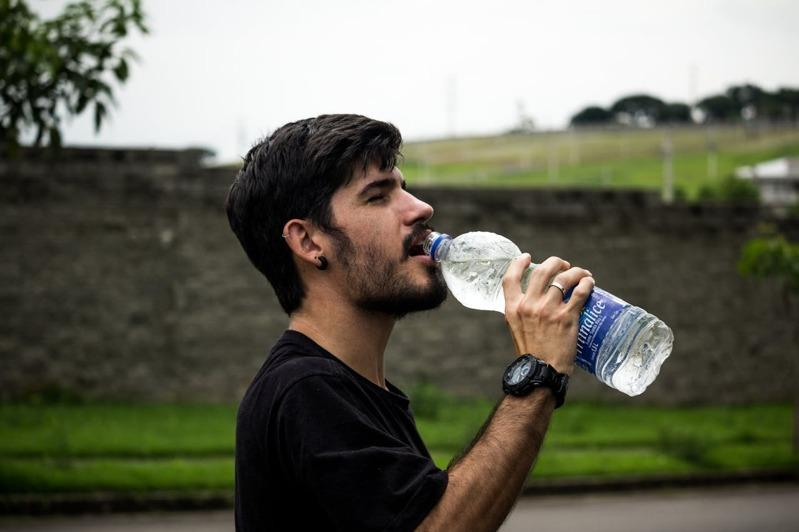

欧洲研究证实，有习惯喝塑料瓶装水的民众，因为「微塑料」(microplastics)进入血液，容易导致血压升高，建议消费者不要喝瓶装水。
根据英国每日邮报(Daily Mail)报导，刊登在国际性科学刊物「微塑料」(Microplastics)的这份研究报告，要求参与实验的八名男性与八名女性，每天只能摄取自来水补充水分，禁止摄取任何塑料瓶或玻璃瓶的瓶装饮料，并在实验期间持续对受试者测量血压。
两周后，所有受试者的舒张压(diastolic blood pressure)明显出现统计学上的下降，对此研究人员强调：「实验结果显示，血压会随着塑料吸收量减少而降低，因此我们认为血液中存有的塑料颗粒，可能导致血压升高。」
这项研究结果也是首次证实，减少使用塑料可能有降血压的效果，可能是受益于血液中所含塑料颗粒体积减少之故。
过去已有研究证实，玻璃瓶装饮料也含有微量塑料可能引发高血压，增加罹患心血管疾病的风险，因此该研究证实，只要受试者停止喝塑料瓶装或玻璃瓶装的饮料(包括水)，而且只能喝自来水的情况下，两周后血压就会下降。
研究表明，「微塑料」是经由紫外线辐射分解或产生的微小颗粒，在现代生活中无处不在，包括唾液、心脏组织、肝脏、肾脏与胎盘都发现微塑料，不过多项研究证实，塑料瓶装饮料所含的「微塑料」浓度最高。
奥地利多瑙河私立大学(Danube Private University)研究人员表示：「我们观察到的血压变化，所以减少塑料颗粒摄取，即可降低心血管疾病风险。」并强调：「经过广泛研究，我们得出的结论，就是大家应该避免喝塑料瓶装饮料。」